압연기능사 (2014-01-26 기출문제)
1과목: 금속재료일반
1. 단면적이 2cm2의 철구조물이 5000kgf의 하중에서 균열이 발생 될 때의 압축응력(kgf/cm2)은?
- 1000 kgf/cm2
- 2500 kgf/cm2
- 3500 kgf/cm2
- 4000 kgf/cm2
(정답률: 93%)

2. 알루미늄에 10~13% Si를 함유한 합금으로 용융점이 낮고, 유동성이 좋은 알루미늄합금은?
- 실루민
- 라우탈
- 두랄루민
- 하이드로날륨
(정답률: 79%)
3. 다음 중 주철에 대한 설명으로 틀린 것은?
- 주철은 강도와 경도가 크다.
- 주철은 쉽게 용해되고, 액상일 때 유동성이 좋다.
- 회주철은 진동을 잘 흡수하므로 기어박스 및 기계 몸체 등의 재료로 사용된다.
- 주철 중의 흑연은 응고함에 따라 즉시 분리되어 괴상이 되고, 일단 시멘타이트로 정출한 뒤에는 분해하여 판상으로 나타난다.
(정답률: 65%)
4. 다음 금속재료 중 비중이 가장 낮은 것은?
- Zn
- Cr
- Mg
- Al
(정답률: 73%)
5. Sn-Sb-Cu의 합금으로 주석계 화이트 메탈이라고 하는 것은?
- 인코넬
- 콘스탄탄
- 배빗메탈
- 알클래드
(정답률: 79%)
6. 다음 조직 중 탄소가 가장 많이 함유되어 있는 것은?
- 페라이트
- 펄라이트
- 오스테나이트
- 시멘타이트
(정답률: 78%)
7. 전로에서 생산된 용강을 Fe-Mn으로 가볍게 탈산시킨 것으로 기포 및 편석이 많은 강은?
- 림드강
- 킬드강
- 캡트강
- 세미킬드강
(정답률: 68%)
8. 다음 중 베어링합금의 구비조건으로 틀린 것은?
- 마찰계수가 커야 한다.
- 경도 및 내압력이 커야 한다.
- 소착에 대한 저항성이 커야 한다.
- 주조성 및 절삭성이 좋아야 한다.
(정답률: 71%)
9. 다음 중 10배 이내의 확대경을 사용하거나 육안으로 직접 관찰하여 금속조직을 시험하는 것은?
- 라우에 법
- 에릭션 시험
- 매크로 시험
- 전자 현미경 시험
(정답률: 63%)
10. 강의 심냉 처리에 대한 설명으로 틀린 것은?
- 서브제로 처리라 불리운다.
- Ms 바로 위까지 급냉하고 항온 유지한 후 급냉한 처리이다.
- 잔류 오스테나이트를 마텐자이트로 변태시키기 위한 열처리이다.
- 게이지나 볼베어링 등의 정밀한 부품을 만들 때 효과적인 처리 방법이다.
(정답률: 60%)
11. 비정질 합금의 제조법 중에서 기체 급랭법에 해당되지 않는 것은?
- 진공 증착법
- 스퍼터링법
- 화학 증착법
- 스프레이법
(정답률: 68%)
12. 황동과 청동 제조에 사용되는 것으로 전기 및 열전도도가 높으며 화폐, 열교환기 등에 주 원소로 사용되는 것은?
- Fe
- Cu
- Cr
- Co
(정답률: 87%)
13. 도면에서 치수선이 잘못된 것은?
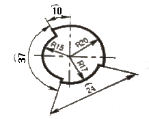
- 반지름(R) 20의 치수선
- 반지름(R) 15의 치수선
- 원호(⁀) 37의 치수선
- 원호(⁀) 24의 치수선
(정답률: 88%)
14. 물품을 구성하는 각 부품에 대하여 상세하게 나타내는 도면으로 이 도면에 의해 부품이 실제로 제작되는 도면은?
- 상세도
- 부품도
- 공정도
- 스케치도
(정답률: 63%)
15. 다음 물체를 3각법으로 표현할 때 우측면도로 옳은 것은? (단, 화살표 방향이 정면도 방향이다.)
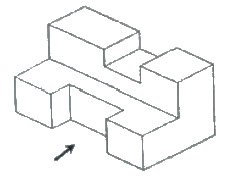
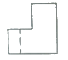
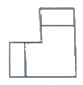
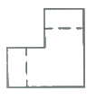
(정답률: 88%)
2과목: 금속제도
16. 다음 도면에 보기와 같이 표시된 금속재료의 기호 중 330 이 의미하는 것은?
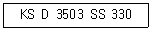
- 최저인장강도
- KS 분류기호
- 제품의 형상별 종류
- 재질을 나타내는 기호
(정답률: 94%)
17. 척도 1:2인 도면에서 길이가 50mm인 직선의 실제 길이는?
- 25mm
- 50mm
- 100mm
- 150mm
(정답률: 77%)
18. 나사의 호칭 M20×2에서 2가 뜻하는 것은?
- 피치
- 줄의 수
- 등급
- 산의 수
(정답률: 82%)
19. 제도 용지 A3 는 A4 용지의 몇 배 크기가 되는가?
- 1/2 배
- √2 배
- 2 배
- 4 배
(정답률: 80%)
20. 다음의 단면도 중 위, 아래 또는 왼쪽과 오른쪽이 대칭인 물체의 단면을 나타낼 때 사용되는 단면도는?
- 한쪽 단면도
- 부분 단면도
- 전 단면도
- 회전 도시 단면도
(정답률: 74%)
21. 다음 중 “C” 와 “SR”에 해당되는 치수 보조 기호의 설명으로 옳은 것은?
- C 는 원호이며, SR 은 구의 지름이다.
- C 는 45도 모따기이며, SR 은 구의 반지름이다.
- C 는 판의 두께이며, SR 은 구의 반지름이다.
- C 는 구의 반지름이며, SR 은 구의 지름이다.
(정답률: 90%)
22. 다음 그림과 같은 투상도는?
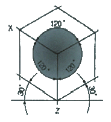
- 사투상도
- 투시 투상도
- 등각 투상도
- 부등각 투상도
(정답률: 89%)
23. 다음 중 가는 실선으로 사용되는 선의 용도가 아닌 것은?
- 치수를 기입하기 위하여 사용하는 선
- 치수를 기입하기 위하여 도형에서 인출하는 선
- 지시, 기호 등을 나타내기 위하여 사용하는 선
- 형상의 부분 생략, 부분 단면의 경계를 나타내는 선
(정답률: 79%)
24. 다음 그림 중에서 FL 이 의미하는 것은?
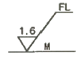
- 밀링 가공을 나타낸다.
- 래핑 가공을 나타낸다.
- 가공으로 생긴 선이 거의 동심원임을 나타낸다.
- 가공으로 생긴 선이 2방향으로 교차하는 것을 나타낸다.
(정답률: 85%)
25. 롤에 스폴링(spalling)이 발생되는 경우가 아닌 것은?
- 롤 표면 부근에 주조 결함이 생겼을 때
- 내균열성이 높은 롤의 재질을 사용하였을 때
- 여러 번의 롤 교체 및 연마 후 많이 사용하였을 때
- 압연이상에 의하여 국부적으로 강한 압력이 생겼을 때
(정답률: 61%)
26. 다음 중 공연비에 대한 설명으로 옳은 것은?
- 고정탄소와 휘발분과 비이다.
- 연료를 연소시키는 데에 사용하는 공기와 연료의 비이다.
- 이론공기량을 1.0 으로 할 때의 실적 공기량의 비율이다.
- 폐가스 조성(성분)에 의거 가스 1Nm3을 완전연소 시키는 데에 필요한 공기량이다.
(정답률: 74%)
27. 압연재료의 변경저항 계산에서 변형저항을 Kw, 변형가도를 Kf, 작용면에서의 외부마찰 손실을 Kr, 내부마찰 손실을 Ki라 할 때 옳게 표현된 관계식은?
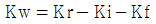
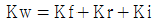
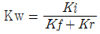
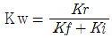
(정답률: 79%)
28. 두께 20mm의 강판을 두께 10mm의 강판으로 압연하였을 때 압하율은 얼마인가?
- 10%
- 20%
- 40%
- 50%
(정답률: 77%)
29. 냉간압연 후 600~700℃로 가열하여 일정시간을 유지하면 압연시 발생된 내부응력을 제거하여 가공성을 향상시키는 풀림과정의 순서로 옳은 것은?
- 회복 → 재결정 → 결정립성장
- 회복 → 결정립성장 → 재결정
- 결정립성장 → 회복 → 재결정
- 결정립성장 → 재결정 → 회복
(정답률: 75%)
30. 열연공정인 RSB 혹은 VSB에서 행해지는 작업이 아닌 것은?
- 트리밍(trimming) 작업
- 슬래브(slab) 폭 압연
- 슬래브(slab) 두께 압연
- 스케일(scale) 제거
(정답률: 62%)
3과목: 압연기술
31. 열연공장의 가열로에서 가열이 완료되어 추출되는 슬래브의 온도 범위로 가장 적합한 것은?
- 650~750℃
- 800~900℃
- 900~1000℃
- 1100~1300℃
(정답률: 65%)
32. 다음 압연조건 중 압연제품의 조직 및 기계적 성질의 변화와 관련이 적은 것은?
- 냉각속도
- 압연속도
- 압하율
- 탈스케일
(정답률: 71%)
33. 점도가 비교적 낮은 기름을 사용할 수 있고 동력의 소비가 적은 이점이 있는 급유법은?
- 중력순환급유법
- 패드급유법
- 체인급유법
- 유륜식급유법
(정답률: 71%)
34. 산세 라인(line)의 스케일 브레이커의 공정 중 그림과 같은 스케일 브레이킹법은?
- 레벨링법
- 롤링법
- 멕케이법
- 프레슈어법
(정답률: 71%)
35. 공형압연기로 만들 수 있는 제품이 아닌 것은?
- 앵글
- H형강
- I형강
- 스파이럴 강관
(정답률: 73%)
36. 판을 압연할 때 압연재가 롤과 접촉하는 입구측의 속도를 VE, 롱레서 빠져나오는 출구측의 속도롤 VA, 그리고 중리범의 속도를 VO 라 할 때 각각의 속도 관계를 옳게 나타낸 것은?
- VE ＜ VO ＜ VA
- VA ＞ VE ＞ VO
- VE ＜ VA ＜ VO
- VE = VA = VO
(정답률: 82%)
37. 스트레이트 방식의 결점을 개선하기 위해서 공형을 경사시켜 직접 압하를 가하기 쉽게 한 것은?
- 플랫 방식
- 버터플라이 방식
- 다이애거널 방식
- 무압하 변형 공형
(정답률: 75%)
38. 연주 주편이 응고할 때 주편중심부에 S, C, P 등의 원소가 모여서 형성되는 결함을 무엇이라 하는가?
- 편석
- 파이프
- 슬래그 피팅
- 비금속 개재물
(정답률: 67%)
39. 판 두께 변동 요인 중 압연기 탄성특성 등 압연기의 변형에 의한 판 두께 변동요인이 아닌 것은?
- 입측 압연소재의 판 두께 변동
- 롤 갭의 설정치 변동
- 롤의 열팽창에 의한 변동
- 유막변동관 롤 편심 오차
(정답률: 51%)
40. 청정 라인(line)의 세정제로 부적합한 것은?
- 가성소다
- 규산소다
- 염산
- 인산소다
(정답률: 83%)
41. 냉간압연하기 전에 실시하는 산세 공정의 장치에 대한 설명 중 옳은 것은?
- 언코일러(uncoiler)는 열연 코일을 접속하는 장치이다.
- 스티쳐(sticher)는 열연코일의 끝부분을 잘라내는 장치이다.
- 플레시 트리머(flash trimmer)는 용접할 때 생긴 두터운 비드를 깍아 다른 부분과 같게 하는 장치이다.
- 업 커트 시어(up-cut shear)는 열연 코일을 풀어 주는 장치이다.
(정답률: 65%)
42. 압연에 의한 조직변화에 대한 설명 중 틀린 것은?
- 냉간가공으로 나타난 섬유조직은 압연방향으로 길게 늘어난다.
- 열간가공 마무리 온도가 높을수록 결정립이 미세하게 된다.
- 슬립온 원자가 가장 밀집되어 있는 격자면에서 먼저 일어난다.
- 열간 가공으로 결정립이 연신된 후에 재결정이 시작된다.
(정답률: 66%)
43. 냉연 조질압연에 대한 설명으로 틀린 것은?
- 풀림작업 후 판의 두께 및 폭을 개선한다.
- 표면에 미려하게 한다.
- 스트립의 형상을 교정하여 평활하게 한다.
- 항복점 연신을 제거한다.
(정답률: 39%)
44. 일반적으로 철강 표면에 생서되어 있는 스케이링 대기와 접한 표면으로부터 스케일 생성 순서가 옳은 것은?
- Fe2O3 → Fe3O4 → Fe → FeO
- Fe3O4 → Fe2O3 → Fe → FeO
- Fe3O4 → Fe2O3 → FeO → Fe
- Fe2O3 → Fe3O4 → FeO → Fe
(정답률: 66%)
45. 냉간 압연의 일반적인 공정 순서로 옳은 것은?
- 열연 Coil → 산세 → 정정 → 냉간 압연 → 표면청정 → 풀림 → 조질 압연
- 열연 Coil → 산세 → 냉간 압연 → 정정 → 표면청정 → 풀림 → 조질 압연
- 열연 Coil → 산세 → 냉간 압연 → 표면청정 → 풀림 → 조질 압연 → 정정
- 열연 Coil → 산세 → 냉간 압연 → 표면청정 → 풀림 → 정정 → 조질 압연
(정답률: 77%)
4과목: 압연설비
46. 압연제품의 표면에 부풀거나 압연방향으로 선모양의 흠이 생기는 결함의 원인은?
- 수축관
- 기공
- 편석
- 내부균열
(정답률: 62%)
47. 공형의 형상설계시 유의하여야 할 사항이 아닌 것은?
- 압연속도와 온도를 고려한다.
- 구멍수를 많게 하는 것이 좋다.
- 최후에는 타원형으로부터 원형으로 되게 한다.
- 패스마다 소재를 90° 씩 돌려서 압연되게 한다.
(정답률: 87%)
48. 단면이 150mm × 150mm 이고 길이가 1m인 소재를 압연하여 단면이 10mm×10mm 제품을 생산하였다. 이 때 제품의 길이는 몇 m 인가?
- 30
- 150
- 225
- 300
(정답률: 64%)
49. 선재 공장에서 압연기 간의 장력을 제거하기 위해 사용하는 장치가 아닌 것은?
- 리피터(repeater)
- 가이드(guide)
- 업 루퍼(up looper)
- 사이드 루퍼(side looper)
(정답률: 70%)
50. 가열로에 설비된 레큐퍼레이터(환열기, recuperater)에 대한 설명 중 옳은 것은?
- 가열로 폐가스를 순환시켜 다시 연소공기로 이용하는 장치
- 가열로 폐가스의 폐열을 이용하여 연소공기를 예열하는 장치
- 연료를 일정한 온도로 예열하여 효율적인 연소가 이루어지도록 하는 설비
- 가열된 압연재의 온도를 자동으로 측정하여 연료 공급량이 조절되도록 하는 장치
(정답률: 66%)
51. 조질압연 설비를 입측설비, 압연기 본체, 출측설비로 나눌 때 압연기 본체에 해당하는 것은?
- 텐션 롤
- 스탠드
- 페이오프 릴
- 코일 콘베이어
(정답률: 63%)
52. 다음 중 열간압연 설비가 아닌 것은?
- 권취기
- 조압연기
- 후판압연기
- 주석박판압연기
(정답률: 59%)
53. 압연작업장의 환경에 영향을 주는 요인과 그 단위가 잘못 연결된 것은?
- 조도 - Lux
- 소음 - dB
- 방사선 - Gauss
- 진동수 – Hz
(정답률: 86%)
54. 최근 압연기에는 ORG(On Line Roll Grinder) 설비가 부착되어 압연 중 작업 롤(work roll) 표면을 전면 혹은 단차 연마를 실시하는 데, ORG 사용 시의 장점이 아닌 것은?
- 롤 서멀 크라운을 제어할 수 있다.
- 롤 마모의 단차를 해소할 수 있다.
- 협폭재에서 광폭재의 폭 역전 가능하다.
- 국부마모 해소로 동일 폭 제한을 해소 할 수 있다.
(정답률: 46%)
55. 압연기의 압하력을 측정하는 장치는?
- 압하 스크류(screw)
- 로드 셀(load cell)
- 플레시 미터(flash meter)
- 텐션 미터(tension meter)
(정답률: 78%)
56. 다음 중 냉연강판, 도금강판 등의 제품을 생산하는 냉연 및 표면 처리 설비로 부적합 한 것은?
- 산세설비
- 풀림설비
- 가열로
- 전기도금설비
(정답률: 64%)
57. 일정한 행동을 취할 것을 지시하는 표지로써 방독마스크를 착용할 것 등을 지시하는 경우의 색체는?
- 녹색
- 빨간색
- 파란색
- 노란색
(정답률: 69%)
58. 노압은 노의 열효율에 아주 큰 영향을 미친다. 노압이 높은 경우에 발생하는 것은?
- 버너 연소상태 약화
- 침입 공기가 많아 열손실 증가
- 소재 산화에 의한 스케일 생성량 증가
- 외부 찬 공기 침투로 로온 저하로 열손실 증대
(정답률: 52%)
59. 열간압연기의 제어형식 주 압연 롤 축을 압연방향으로 대각선쪽으로 틀어 소재판의 크라운 제어를 하는 것은?
- 페어 크로스 밀(pair cross mill)
- 가변 크라운(variable crown)
- 작업 롤 굽힘(work roll bending)
- 중간 롤 시프트(intermediate roll shift)
(정답률: 69%)
60. 크롭 시어의 역할을 설명한 것 중 틀린 것은?
- 중량이 큰 슬래브의 단중 분할하는 목적으로 절단한다.
- 압연재의 중간 부위를 절단하여 후물재의 작업성을 개선한다.
- 경질재 선후단부의 저온부를 절단하여 롤 마트 발새을 방지한다.
- 조압연기에서 이송되어온 재료 선단부를 커팅하여 사상압연기 및 다운 코일러의 치입성을 좋게 한다.
(정답률: 50%)